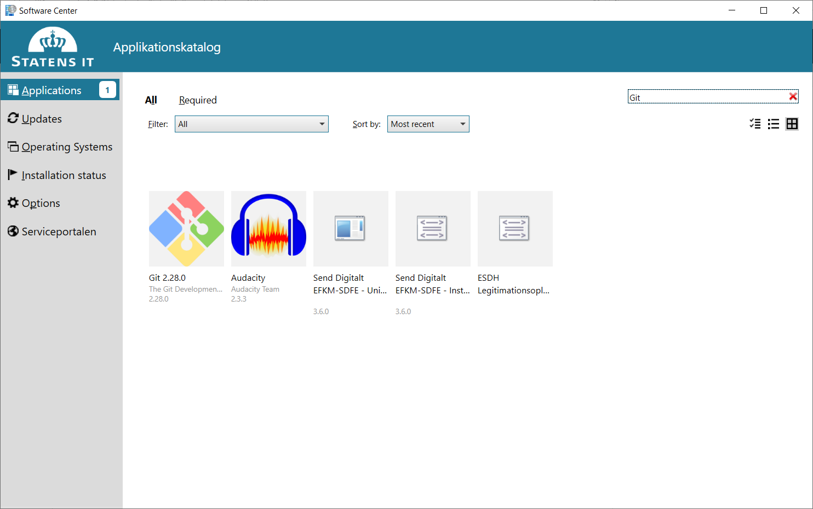
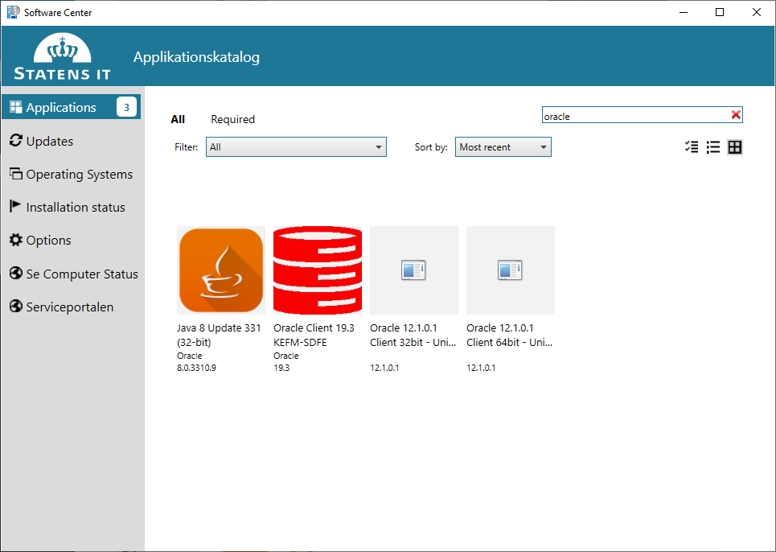
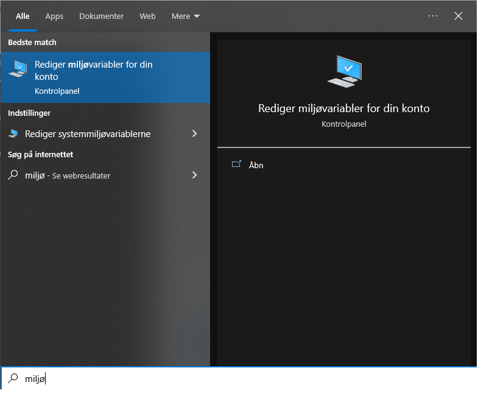
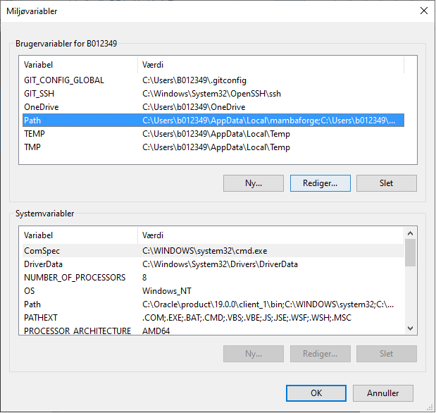

Installationsvejledning
Generelt
Denne vejledning fortæller, hvordan man installerer de nødvendige programmer på éns PC, så man kan tilgå fikspunktregisteret med Python-pakken FIRE.
FIRE skal installeres fra et lokalt Git-arkiv på vores egen PC. Derfor skal vi i første omgang have et værktøj til at hente kildekoden fra den cenrale placering på GitHub.
For at forbinde til databasen med fikspunktregisteret skal der også installeres et værktøj til at lave forbindelsen til databasen fra vores egen PC.
FIRE er bygget i Python, og derfor skal der også installeres en Python-distribution, herunder et pakkestyringsværktøj, som kan installere python-pakker eller andre afhængigheder, som FIRE-programmet skal bruge.
For at komme dértil skal følgende installeres fra Software Center:
Versionsstyringsværktøjet Git
Databaseværktøjet Oracle Instantclient
Dérudover skal følgende installeres manuelt
Python-distributionen MambaForge.
Og gennem pakkestyringsværktøjet mamba skal de resterende afhængighederne til FIRE installeres.
Git
Installer Git fra Software Centeret. Åbn "Software Center" via Startmenuen. Søg efter "git" og installér det.
{kind=link}
Oracle Instantclient
Installer Oracle instantclient fra Software Centeret. Åben "Software Center" via Startmenuen. Søg efter "Oracle", der dukker flere muligheder op. Den korrekte er "Oracle Client 19.3 KEFM-SDFE". Versionsnummeret er muligvis anderledes. Er der flere at vælge mellem tag da den med det højeste versionsnummer. Følg instruktionerne på skærmen.
{kind=link}
MambaForge
FIRE er en Python applikation hvorfor vi skal have Python installeret på
computeren for at kunne afvikle programmet. Til det bruges MambaForge, der
inkluderer Python-fortolker og pakkestyringsværktøjet mamba.
Under SDFIs side for Python-brugere findes en installationsvejledning. Følg Den fulde vejledning til du kommer til overskriften Demonstration.
Når MambaForge er installeret kan du nu i Windows start-menuen finde "Miniforge Prompt (mambaforge)". Alle efterfølgende kommandoer i denne installationsvejledning kan afvikles i denne terminal.
Note
Det kan være en fordel at lave en genvej til "Miniforge Prompt" i Windows' proceslinjen (åben programmet, højreklik på ikonet i proceslinjen, vælg "Fastgør til proceslinje").
Har du sat alle de anbefalede krydser i installations-menuerne, burde du
imidlertid også kunne tilgå mamba-kommandoen fra en hvilken som helst anden
terminal, du ønsker at bruge, da stien til mamba er føjet til din brugers
PATH-miljøvariabel.
Note
mamba-kommandoen gør funktionelt det samme som conda, men er bare
hurtigere, end sidstnævnte. Med MambaForge-installationen er det fortsat
muligt at skrive conda, da den er lavet som et alias, der peger på
mamba.
Programmet henter fortsat pakker fra conda-forge, og i en del output er
der også fortsat henvisninger til kald med kommandoen conda, der som
nævnt uden problemer kan bruges som alternativ til mamba, hvis man har
lyst.
Linux kommandolinjeværktøjer
Nogle af os er vant til at bruge kommandolinjen på et et Linuxsystem og mangler
ofte kommandoer som ls, cat og grep. Herunder vises hvordan man kan
få adgang til dem på sin Windows-maskine.
Note
Dette afsnit er valgfri. Hvis du klarer dig fint med kommandoudvalget under Windows er dette ikke nødvendigt og du kan spring til selve installationen af FIRE i næste afsnit.
Linuxkommandoerne følger med Git der blev installeret i et af de tidligere skridt.
Desværre er de ikke som udgangspunkt tilgængelige i vores terminal.
Det kan ændres ved at tilføje deres placering til miljøvariablen PATH.
Start med at åbne start-menuen (tryk på Windows-tasten) og søg efter "miljøvariable". Vælg derefter "Rediger miljøvariable for din konto" som vist herunder.
{kind=link}
Herefter kommer følgende vindue frem med en oversigt over de miljøvariable der er sat for din konto. Dit indhold er formentligt anderledes end det der ses på billedet, men "Path" bør være der for alle.
{kind=link}
Marker "Path" og tryk på "Rediger..". Det resulterer i en dialogbox hvor der kan tilføjes mere indhold til miljøvariablen "Path".

Tryk på "Ny" og indtast stien C:\Program Files\Git\usr\bin. Næste gang du
åbner en terminal har du adgang til de mest gængse Linux-kommandoer, prøv fx med
ls.
FIRE
Nedenfor installerer vi først afhængighederne til FIRE, og dernæst selve programmet.
Byg miljø
Åbn "Miniforge Prompt". Start med at lave en ny mappe til FIRE-koden og download den med git:
(base) C:\>git clone https://github.com/SDFIdk/FIRE.git
Cloning into 'FIRE'...
remote: Enumerating objects: 5692, done.
remote: Counting objects: 100% (62/62), done.
remote: Compressing objects: 100% (43/43), done.
remote: Total 5692 (delta 21), reused 54 (delta 18), pack-reused 5630
Receiving objects: 100% (5692/5692), 27.85 MiB | 14.60 MiB/s, done.
Resolving deltas: 100% (3518/3518), done.
Updating files: 100% (225/225), done.
Sørg for at den seneste version af koden bruges:
(base) C:\>cd FIRE
(base) C:\FIRE>git checkout fire-1.10.0
Opret et isoleret miljø til FIRE (læs eventuelt mere om Python-miljøer her):
(base) C:\FIRE>mamba env create --file environment.yml
pkgs/main/win-64 No change
pkgs/main/noarch No change
pkgs/r/win-64 No change
pkgs/msys2/win-64 No change
pkgs/r/noarch No change
pkgs/msys2/noarch No change
conda-forge/noarch 10.8MB @ 3.8MB/s 4.2s
conda-forge/win-64 18.7MB @ 3.2MB/s 8.5s
Looking for: ['click=8.0', 'cx_oracle=8.3', 'fiona=1.8', 'gama=2.15', 'openpyxl=3.0', 'pandas=1.3', 'pyproj=3.3', 'python=3.9', 'sqlalchemy=1.4', 'xmltodict=0.12']
Transaction
Prefix: C:\Users\B...\AppData\Local\mambaforge\envs\fire
Updating specs:
- click=8.0
- cx_oracle=8.3
- fiona=1.8
- gama=2.15
- openpyxl=3.0
- pandas=1.3
- pyproj=3.3
- python=3.9
- sqlalchemy=1.4
- xmltodict=0.12
Package Version Build Channel Size
------------------------------------------------------------------------------------------------
Install:
------------------------------------------------------------------------------------------------
+ attrs 22.2.0 pyh71513ae_0 conda-forge/noarch 54kB
(...)
+ zstd 1.5.2 h7755175_4 conda-forge/win-64 Cached
Summary:
Install: 106 packages
Total download: 121MB
------------------------------------------------------------------------------------------------
python_abi 6.1kB @ 106.3kB/s 0.1s
(...)
libspatialite 12.0MB @ 1.8MB/s 2.3s
Preparing transaction: done
Verifying transaction: done
Executing transaction: done
#
# To activate this environment, use
#
# $ conda activate fire
#
# To deactivate an active environment, use
#
# $ conda deactivate
Efter endt installation har du nu et miljø kaldet fire, som du kan aktivere
med mamba eller, som der står i output ovenfor, conda:
(base) C:\FIRE>conda activate fire
(fire) C:\FIRE>
Note
Bemærk, at der efter aktiveringen står (fire) i starten af
kommandolinjeprompten.
Bruger du terminalen Miniforge Prompt, så bemærk, at (base)-miljøet
skifter til (fire).
(base)-miljøet er som udgangspunkt kun automatisk aktiveret i
Miniforge Prompt-terminalen.
Konfigurationsfil
For at FIRE kan forbinde til databasen er det nødvendigt at tilføje en
konfigurationsfil til systemet hvori adgangsinformation
til databasen er registreret. Placer den i mappen C:\Users\<brugernavn>.
Note
Tag fat i en kollega for at få oplyst brugernavn, adgangskode osv.
Installation
Med konfigurationsfilen på plads kan vi nu installere FIRE:
(fire) C:\FIRE>python -m pip install -e .
Obtaining file:///C:/FIRE
Preparing metadata (setup.py) ... done
Requirement already satisfied: cx_Oracle>=7.0 in c:\users\b...\appdata\local\mambaforge\envs\fire\lib\site-packages (from fire==1.5.0) (8.3.0)
Requirement already satisfied: sqlalchemy>=1.2.13 in c:\users\b...\appdata\local\mambaforge\envs\fire\lib\site-packages (from fire==1.5.0) (1.4.46)
Requirement already satisfied: click in c:\users\b...\appdata\local\mambaforge\envs\fire\lib\site-packages (from fire==1.5.0) (8.0.4)
Requirement already satisfied: click_plugins in c:\users\b...\appdata\local\mambaforge\envs\fire\lib\site-packages (from fire==1.5.0) (1.1.1)
Requirement already satisfied: greenlet!=0.4.17 in c:\users\b...\appdata\local\mambaforge\envs\fire\lib\site-packages (from sqlalchemy>=1.2.13->fire==1.5.0) (2.0.1)
Requirement already satisfied: colorama in c:\users\b...\appdata\local\mambaforge\envs\fire\lib\site-packages (from click->fire==1.5.0) (0.4.6)
Installing collected packages: fire
Running setup.py develop for fire
Successfully installed fire-1.5.0
Bekræft at installation er gennemført korrekt
(fire) C:\FIRE>fire --version fire, version 1.10.0
Note
Tip: Da mamba er tilgængeligt lige meget, hvilken mappe, du står i med
terminalen, er du også uafhængig af mappe-placering, når du skal aktivere
fire.
Du kan med andre ord starte i dén mappe, du arbejder i og køre aktiverings-kommandoen herfra.
Opdatering
Ved opdatering til en ny version af FIRE køres følgende kommandoer fra et nyligt åbnet terminalvindue:
(base) C:\>cd C:\FIRE
(base) C:\FIRE>mamba activate fire
(fire) C:\FIRE>git fetch origin
(fire) C:\FIRE>git checkout fire-1.10.0
(fire) C:\FIRE>mamba env update --file environment.yml
Måske får du undervejs en advarsel om, at mamba/conda skal opdateres:
==> WARNING: A newer version of conda exists. <==
current version: 4.5.11
latest version: 4.6.4
Please update conda by running
$ conda update -n base -c defaults conda
Gør som foreslået og kør kommandoen conda update -n base -c defaults
conda.
Afinstallering
Det kan i visse tilfælde være nødvendigt at afinstallere FIRE. Det gøres i
praksis ved at fjerne miljøet fire:
C:\>mamba env remove -n fire
Note
Hvis fire-miljøet er aktiveret, skal det først deaktivers før det er
muligt at slette det. Gøres med kommandoen:
(fire) C:\>mamba deactivate
Herefter fjernes git repositoriet med FIRE kildekoden:
C:\>rmdir /s C:\FIRE